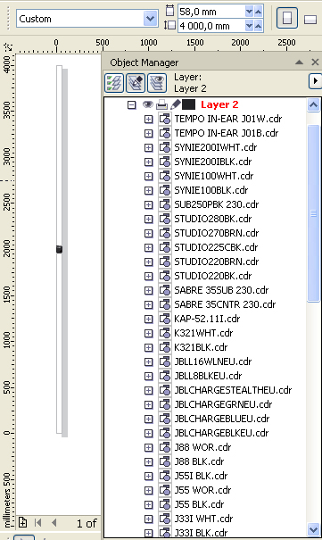
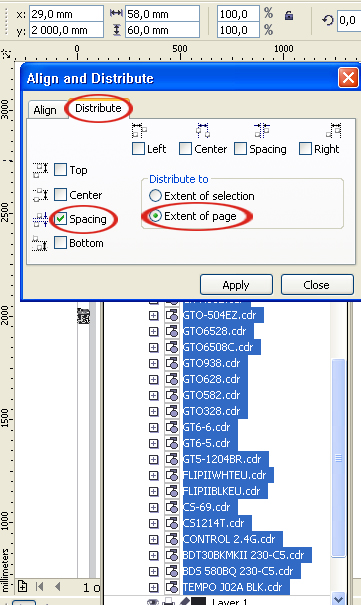
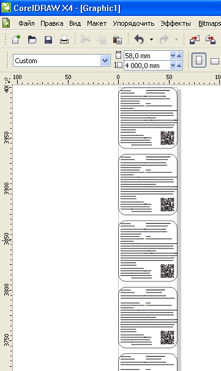

Как собрать в один файл - кучу файлов
Figaro / 24.04.2014, 14:26
Форум:
Как собрать в один файл - кучу файлов CDR автоматом, а не в ручную - файлов больше 500 шт в каждом одна страница
Как собрать в один файл - кучу файлов CDR автоматом, а не в ручную - файлов больше 500 шт в каждом одна страница
Для примера я взял имевшиеся у меня 61 файл этикеток размером 58 х 60 мм. Решил, что буду раскладывать их в вертикальную ленту. Для этого мне понадобится формат нового документа 58 х (60 х 61 шт): 58 х 3660.
В исходной папке выделяем все файлы и через панель задач втаскиваем (импортируем) в новый документ. Все импортированные одним разом файлы окажутся накиданными аккуратной стопочкой, один над другим.

Теперь их можно распределить в ленту с помощью окна "Выравнивание и распределение"

на следующем рисунке видно, что фалы распределились с некоторым интервалом, так как высота документа (страницы) была установлена с запасом, то есть 4000 мм.

Если бы было установлено значение 3660, то все этикетки встали бы вплотную.
В более общем случае, когда все файлы разноформатные, формат нового документа придётся подобрать в несколько приближений. Сначала установите какой-нибудь. После распределения файлов, если Вы увидите, что они сгрудились, налезают один на другой, увеличьте высоту или ширину Вашей ленты (в зависимости от того, как Вы их распределяете) и снова распределите относительно страницы. При необходимости повторить это действие до получения желаемого результата.
Распределение какой-либо матрицей разноформатных файлов вряд ли можно автоматизировать.
задача выглядит несколько иначе - каждый файл из 500 нужно поместить на отдельную страницу ...
... вес результата, а также целесообразность идеи - файла из 500 страниц, оставим ТС ...
1. Создаем новый документ
2. Штатный импорт (CTRL+I) нескольких документов не годится - т. к. потребует 500-кратного нажатия пробела для помещения в центр страницы всех импортуемых файлов .... а вот перетаскивание мышью вполне для этого годится, потому что не требует подтверждения места расположения для каждого файла. Так и поступим, только будем иметь в виду то, что центром станет то место, куда будет направлен курсор в момент отпускания кнопки мыши
3. Далее CTRL+A - Выделить всё
4. Запускаем макрос из сообщения
To layer? но только не на слои, а на новые страницы?
Прошу к столу. Вскипело.